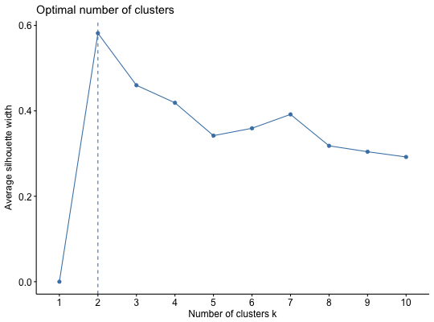
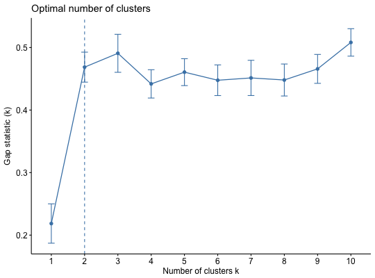
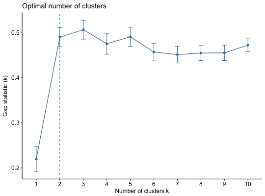

Dertermining and Visualizing the Optimal Number of Clusters
Partitioning methods, such as k-means clustering require the users to specify the number of clusters to be generated.
- fviz_nbclust(): Dertemines and visualize the optimal number of clusters using different methods: within cluster sums of squares, average silhouette and gap statistics.
- fviz_gap_stat(): Visualize the gap statistic generated by the
function
clusGap() [in cluster package]. The optimal number of clusters is specified using the "firstmax" method (?cluster::clustGap).
fviz_nbclust(x, FUNcluster = NULL, method = c("silhouette", "wss", "gap_stat"), diss = NULL, k.max = 10, nboot = 100, verbose = interactive(), barfill = "steelblue", barcolor = "steelblue", linecolor = "steelblue", print.summary = TRUE, ...) fviz_gap_stat(gap_stat, linecolor = "steelblue", maxSE = list(method = "firstSEmax", SE.factor = 1))
Arguments
- x
- numeric matrix or data frame. In the function fviz_nbclust(), x can be the results of the function NbClust().
- FUNcluster
- a partitioning function which accepts as first argument a
(data) matrix like x, second argument, say k, k >= 2, the number of
clusters desired, and returns a list with a component named cluster which
contains the grouping of observations. Allowed values include: kmeans,
cluster::pam, cluster::clara, cluster::fanny, hcut, etc. This argument is
not required when x is an output of the function
NbClust(). - method
- the method to be used for estimating the optimal number of clusters. Possible values are "silhouette" (for average silhouette width), "wss" (for total within sum of square) and "gap_stat" (for gap statistics).
- diss
- dist object as produced by dist(), i.e.: diss = dist(x, method = "euclidean"). Used to compute the average silhouette width of clusters, the within sum of square and hierarchical clustering. If NULL, dist(x) is computed with the default method = "euclidean"
- k.max
- the maximum number of clusters to consider, must be at least two.
- nboot
- integer, number of Monte Carlo ("bootstrap") samples. Used only for determining the number of clusters using gap statistic.
- verbose
- logical value. If TRUE, the result of progress is printed.
- barfill, barcolor
- fill color and outline color for bars
- linecolor
- color for lines
- print.summary
- logical value. If true, the optimal number of clusters are printed in fviz_nbclust().
- ...
- optionally further arguments for FUNcluster()
- gap_stat
- an object of class "clusGap" returned by the function clusGap() [in cluster package]
- maxSE
- a list containing the parameters (method and SE.factor) for
determining the location of the maximum of the gap statistic (Read the
documentation ?cluster::maxSE). Allowed values for maxSE$method include:
- "globalmax": simply corresponds to the global maximum, i.e., is which.max(gap)
- "firstmax": gives the location of the first local maximum
- "Tibs2001SEmax": uses the criterion, Tibshirani et al (2001) proposed: "the smallest k such that gap(k) >= gap(k+1) - s_k+1". It's also possible to use "the smallest k such that gap(k) >= gap(k+1) - SE.factor*s_k+1" where SE.factor is a numeric value which can be 1 (default), 2, 3, etc.
- "firstSEmax": location of the first f() value which is not larger than the first local maximum minus SE.factor * SE.f[], i.e, within an "f S.E." range of that maximum.
- see ?cluster::maxSE for more options
Value
- fviz_nbclust, fviz_gap_stat: return a ggplot2
See also
Examples
set.seed(123) # Data preparation # +++++++++++++++ data("iris") head(iris)#> Sepal.Length Sepal.Width Petal.Length Petal.Width Species #> 1 5.1 3.5 1.4 0.2 setosa #> 2 4.9 3.0 1.4 0.2 setosa #> 3 4.7 3.2 1.3 0.2 setosa #> 4 4.6 3.1 1.5 0.2 setosa #> 5 5.0 3.6 1.4 0.2 setosa #> 6 5.4 3.9 1.7 0.4 setosa# Remove species column (5) and scale the data iris.scaled <- scale(iris[, -5]) # Optimal number of clusters in the data # ++++++++++++++++++++++++++++++++++++++ # Examples are provided only for kmeans, but # you can also use cluster::pam (for pam) or # hcut (for hierarchical clustering) ### Elbow method (look at the knee) # Elbow method for kmeans fviz_nbclust(iris.scaled, kmeans, method = "wss") + geom_vline(xintercept = 3, linetype = 2)# Average silhouette for kmeans fviz_nbclust(iris.scaled, kmeans, method = "silhouette")### Gap statistic library(cluster) set.seed(123) # Compute gap statistic for kmeans # we used B = 10 for demo. Recommended value is ~500 gap_stat <- clusGap(iris.scaled, FUN = kmeans, nstart = 25, K.max = 10, B = 10)#> Clustering k = 1,2,..., K.max (= 10): .. done #> Bootstrapping, b = 1,2,..., B (= 10) [one "." per sample]: #> .......... 10print(gap_stat, method = "firstmax")#> Clustering Gap statistic ["clusGap"] from call: #> clusGap(x = iris.scaled, FUNcluster = kmeans, K.max = 10, B = 10, nstart = 25) #> B=10 simulated reference sets, k = 1..10; spaceH0="scaledPCA" #> --> Number of clusters (method 'firstmax'): 3 #> logW E.logW gap SE.sim #> [1,] 4.534565 4.753100 0.2185345 0.03145767 #> [2,] 4.021316 4.489937 0.4686203 0.02397553 #> [3,] 3.806577 4.297333 0.4907552 0.03038244 #> [4,] 3.699263 4.141120 0.4418565 0.02263960 #> [5,] 3.589284 4.049903 0.4606189 0.02153819 #> [6,] 3.519726 3.967399 0.4476734 0.02451182 #> [7,] 3.448288 3.899672 0.4513843 0.02816061 #> [8,] 3.398210 3.846276 0.4480656 0.02557573 #> [9,] 3.334279 3.800104 0.4658256 0.02313226 #> [10,] 3.250246 3.758406 0.5081600 0.02195875fviz_gap_stat(gap_stat)# Gap statistic for hierarchical clustering gap_stat <- clusGap(iris.scaled, FUN = hcut, K.max = 10, B = 10)#> Clustering k = 1,2,..., K.max (= 10): .. done #> Bootstrapping, b = 1,2,..., B (= 10) [one "." per sample]: #> .......... 10fviz_gap_stat(gap_stat)